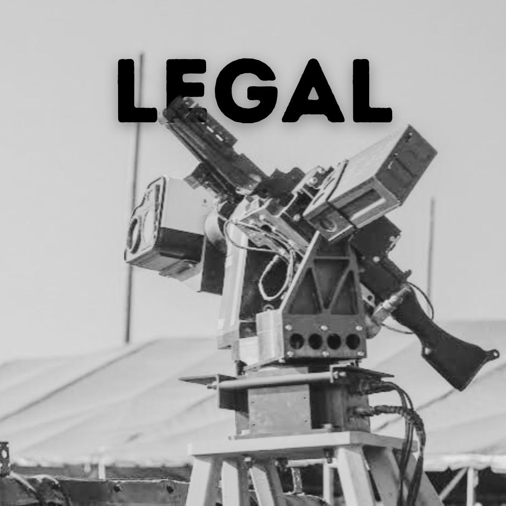

The United Nations Sixth Committee, also known as the Legal Committee, is a primary forum for discussing international legal issues within the UN. It addresses topics like the development of international law, the codification of treaties, and the promotion of justice globally. The committee discusses matters such as human rights, the peaceful settlement of disputes, and the laws of war, working to ensure that legal frameworks are upheld in international relations. In MUN, delegates in the Legal Committee debate and draft resolutions on legal challenges facing the world.